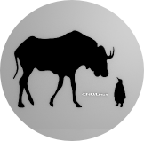
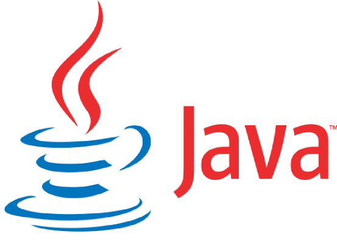

Leer
La lista de beneficios de un hábito de lectura es interminable , aumenta tus niveles de conocimiento y educación al igual nos acerca a nuevas ideas, nuevas formas de pensar, nuevas tecnologías. Es importante que seas parte del grupo de personas en un modelo de generación de conocimiento , lee , aplica, difunde tu nuevo conocimiento. Un libro se escribió para ser leído y el conocimiento para ser compartido.

Software Libre
Sistemas operativos, software de diseño, ofimática, multimedia, todos los paquetes , herramientas y utilidades que necesites para realizar tu proyecto están bajo alguna de las licencias de código abierto. El software libre te permite adquirir , modificar y redistribuir el código fuente sin ningún costo. El software libre es una filosofía ,una cultura, un movimiento... Una simple idea para compartir.
Comunidad
Trabajar con entusiasmo sin esperar mas que la experiencia y satisfacción de contribuir, es un desafió cultural, pero hay miles de increíbles proyectos que funcionan así por todo el mundo . Ser parte de una comunidad incrementa notablemente tus habilidades como programador, por tu trabajo al interpretar el código ya escrito y por la revisión a tus contribuciones por parte de programadores expertos.

Desarrollo Web. front-end.
Curso-1
Diseño y desarrollo de la interfaz con la cual el usuario interactua. Básicamente el front-end esta formado por 3 capas HTML el contenido , CSS la presentación y JavaScript funcionamiento. Al igual estaremos utilizando increíbles frameworks como jQuery, MooTools, ExtJS y otros.

Java. Un lenguaje simple, seguro, portátil...
Curso-2
Distribuido, OO, interpretado, robusto, arquitectura neutral, alto rendimiento, multiproceso y dinámico. Es un lenguaje muy poderoso, ampliamente usado, excelente documentación, libros, foros, lo encontramos en una infinidad de proyectos, donde quiera que vayas incluso en tu dispositivo móvil.
Base de Datos.
back-end.
Curso-3
El propósito de una base de datos es almacenar información texto, imágenes, audio, videos, etc. Una base de datos requiere de un diseño de almacenamiento , un modelo de datos , diseño de las relaciones entre los datos, administración y mas.
Aprenderemos lenguaje SQL y la administración de PostgreSQL, MySQL, Oracle y una introducción a NoSQL.